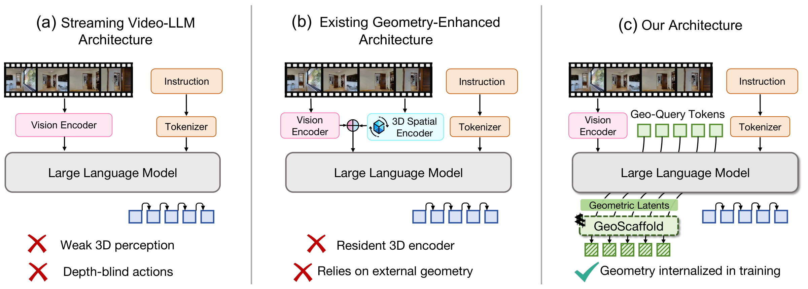
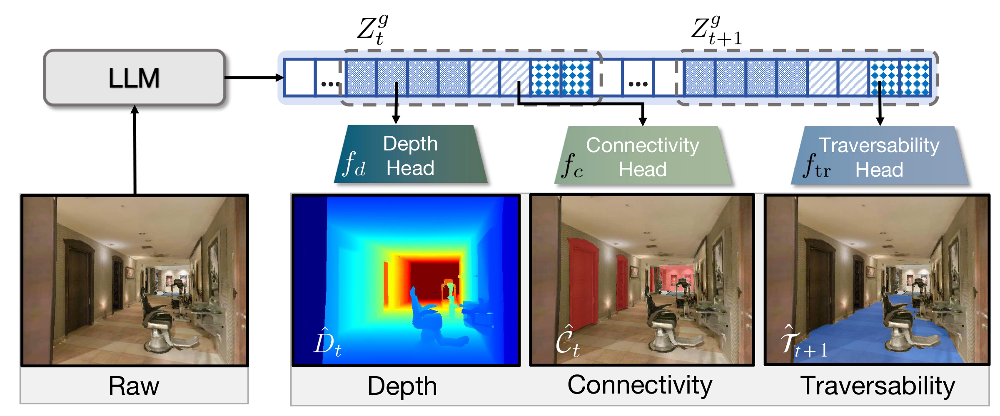
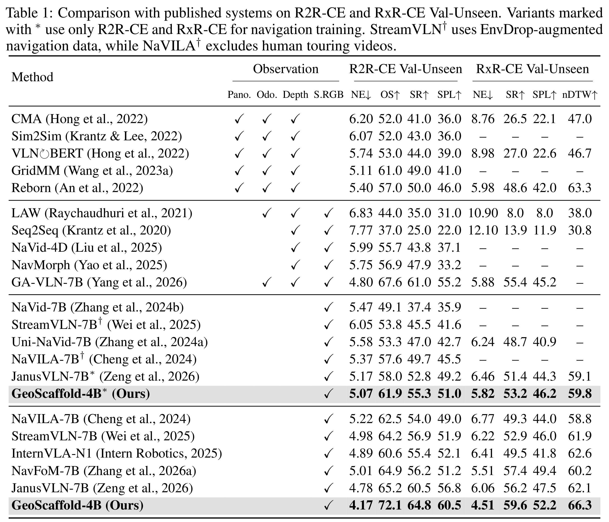
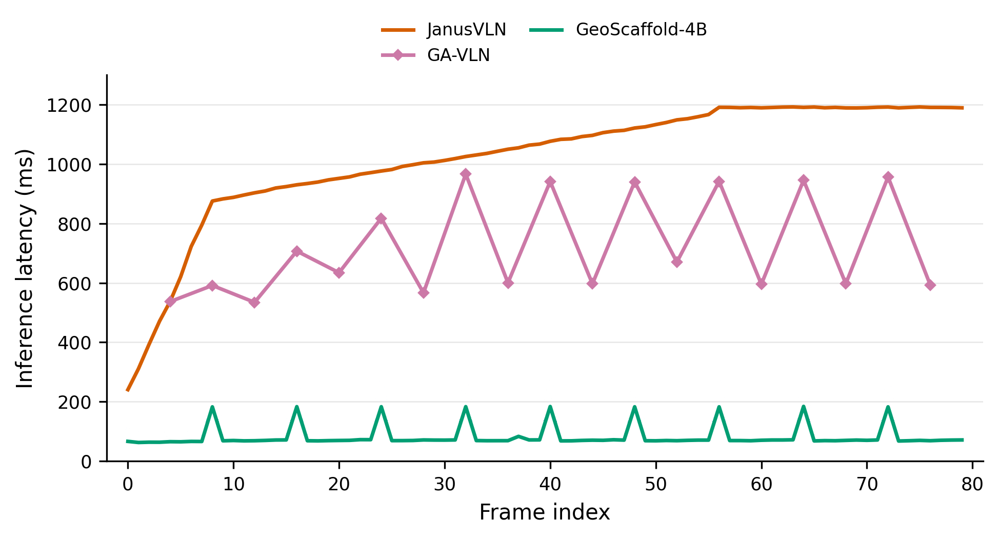

GeoScaffold: Learning Compact Geometric Latents via Reconstruction for Efficient Vision-Language Navigation
Abstract
Recent vision-and-language navigation (VLN) systems increasingly adopt streaming Video-LLM policies that map egocentric RGB observations and instructions directly to low-level actions. Yet these policies inherit weak 3D geometric priors from 2D pretraining. Existing geometry-aware extensions charge a persistent inference-time price: depth sensors, 3D encoders, or per-step perception tool calls. We propose GeoScaffold, a geometric supervision framework that pays this price once, at training time, by internalizing geometry into the policy itself. It first learns a compact depth tokenizer on depth maps from the training trajectories and freezes it. It then fine-tunes the policy with a handful of learnable geometry query tokens, training their hidden states to reconstruct navigation-critical geometry such as depth, connectivity, and traversability. This supervision turns the query states into compact geometric latents for action decoding, and through the shared weights also internalizes geometry into the backbone's own representations. Like a scaffold, the tokenizer, target generators, and reconstruction heads are discarded after training, leaving the backbone and action interface unchanged. Extensive experiments show that GeoScaffold consistently outperforms leading vision-only navigators on continuous VLN benchmarks, offering a practical paradigm for lightweight edge deployment of spatially aware embodied navigation models.
Demos
Learning Geometry During Training

Stage I: learn a compact depth tokenizer. A 0.74M-parameter VQ-VAE is trained offline on depth maps from navigation training trajectories, then frozen. It represents each depth map as 100 discrete tokens on a 10 × 10 grid, using a 128-entry codebook.
Stage II: reconstruct geometry through query tokens. Eight learnable query tokens are inserted before each action block: four for depth, two for connectivity, and two for traversability. Training-only heads reconstruct the corresponding geometric targets. A hybrid attention mask lets the queries within a turn attend to one another bidirectionally while the remaining sequence stays causal.
Deployment: retain the geometric latents. The tokenizer, target generators, and reconstruction heads are discarded after training. The deployed navigator takes RGB observations, language, and dialogue history. The learned query embeddings and hybrid attention mask remain, allowing action decoding to read the compact geometric latents.

Experimental Results

Inference Efficiency
| Method | Average latency ↓ |
|---|---|
| JanusVLN | 1,160 ms / frame |
| GA-VLN | 750 ms / frame |
| GeoScaffold-4B | 81 ms / frame |
Latency measures the time to process one incoming frame and emit an action, after the streaming context fills its sliding window. GeoScaffold-4B supports over 12 Hz on the RTX 4090. JanusVLN retains a VGGT 3D encoder, and GA-VLN builds a geometry-aware BEV representation from RGB-D observations; neither additional module is needed by GeoScaffold at inference.

BibTeX
@misc{jiang2026geoscaffold,
title = {GeoScaffold: Learning Compact Geometric Latents via
Reconstruction for Efficient Vision-Language Navigation},
author = {Yixuan Jiang and Wentong Li and An Liu and Zihao Xin and
Fulin Tang and Cong Leng and Yang Gao and Jian Cheng},
year = {2026},
note = {Manuscript},
url = {https://eason-jon.github.io/GeoScaffold/}
}